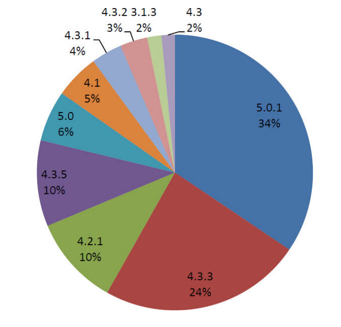
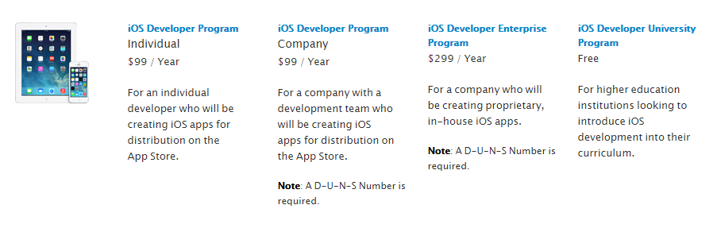
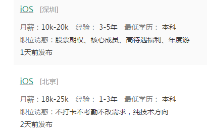
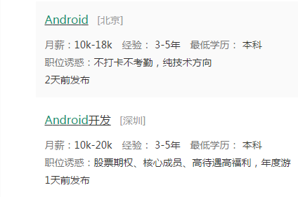
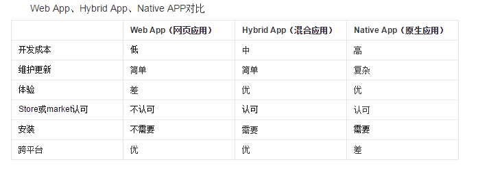
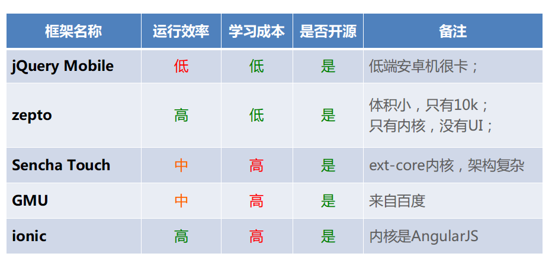
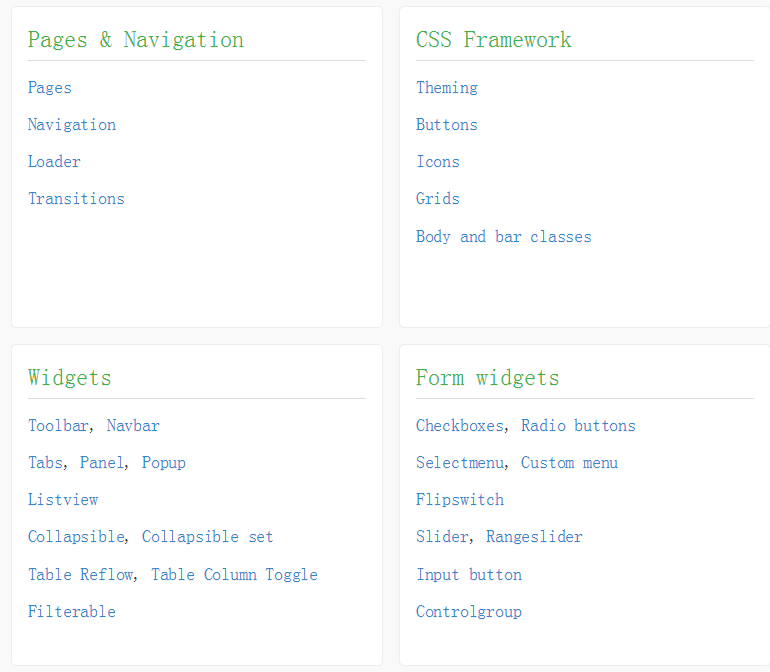
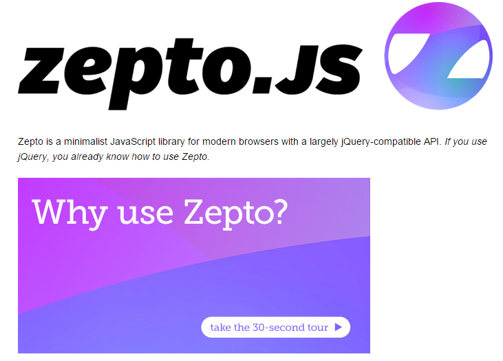

Web APP
BY Hao Ju Zheng
github: https://github.com/hjzheng
Mobile App
- Native App
- Web APP
- Hybrid App
Native App
Native App是一种基于智能手机本地操作系统如IOS、Android、WP并使用原生程式编写运行的第三方应用程序,也叫本地app。
2012 Android系统版本分布

IOS 系统版本分布图
苹果开发者账号（收费）
IOS 和 Android 程序员 薪酬 (lagou网)
 Web APP
WebApp是指基于Web的系统和应用, Web APP说白了就是一个针对Iphone、Android优化后的web站点，它使用的技术无非就是HTML或HTML5、CSS3、JavaScript，服务端技术JAVA、PHP、ASP。
Hybrid App（Native应用和Web应用结合）
部分代码以Web技术编程，部门代码由某些Native Container承担（例如PhoneGAP插件，BAE插件），其目的是在HTML5尚未完全支持Device API和Network API的目前阶段，承担这部分职责。
Hybrid App -- QQ
三种类型应用比较
Your choice?
像我们这种人又少又没钱，还想快速开发出应用的团队，你觉得你有得选么？
主流的Web App开发框架对比（1）
主流的Web App开发框架对比（2）
JQuery Mobile
Zepto Js
AngularJS + Angular-touch
? ? ?
谢谢观赏
2014-11-21
如果你喜欢,请star我